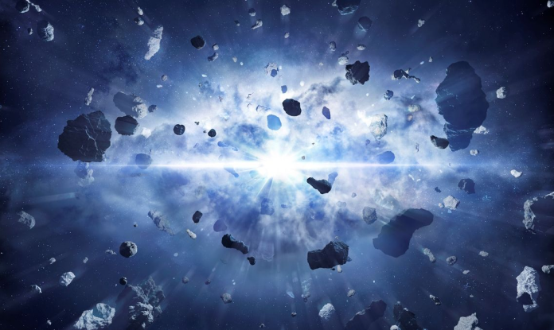

BIG BANG THEORY
This is the most recent theory explaining the origin and evolution of the universe. The Big Bang theory suggests that the history of the universe began with the Big Bang around 13.8 billion years ago. As a result of the Big Bang, time, space, and all matter were created, leading to the expansion of the cosmos.
